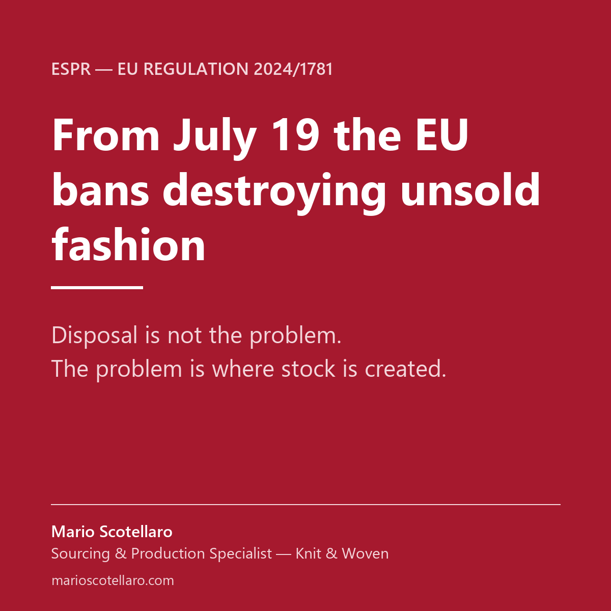

As of July 19, large fashion companies in the EU can no longer destroy unsold clothing, footwear and accessories. Under the Ecodesign Regulation, every leftover item needs a documented second life: resale, repair, donation or recycling.
Small and mid-sized brands are exempt for now — the obligation reaches them in 2030. But the direction is set, and the real question behind the rule is not disposal. It's why the stock was there in the first place.
Unsold inventory is rarely a sales problem. It starts upstream — and it is not the factories' fault: every factory works with the minimums and lead times its setup allows. The problem is the pairing. When a brand's volumes and calendar sit with the wrong production base, buying too deep and too early becomes the only option.
In 21 years running sourcing for a brand shipping 20 million pieces a year, I learned that most "waste" is decided months before the season starts — at the table where quantities, suppliers and delivery dates are set.
For brands where sourcing has a seat at the table — how much to produce, where, with how much flexibility — this regulation changes nothing. For everyone else, unsold stock stops being a hidden cost and becomes a documented problem.